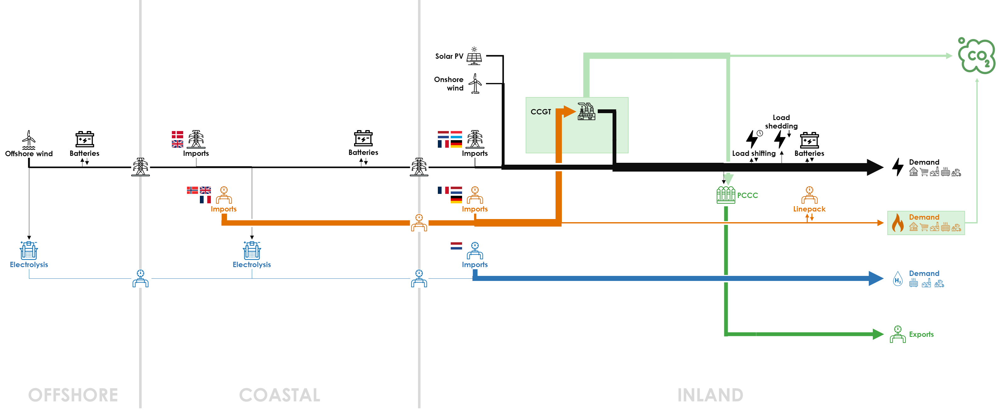
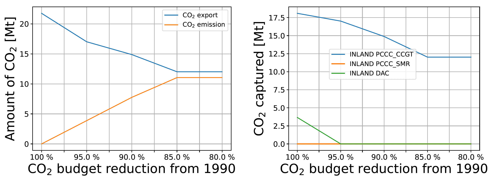
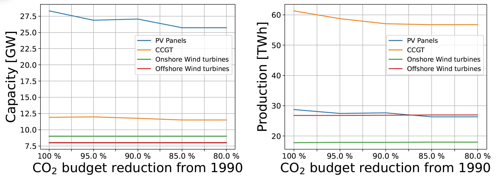
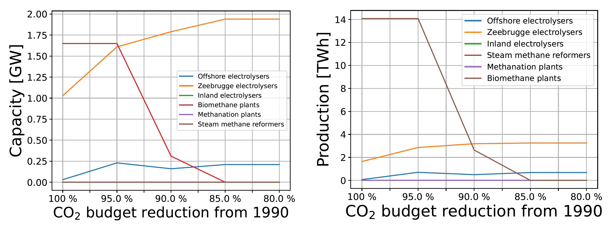

The Base Case assumes a net-zero energy system by 2050. But the Belgian energy system is integrated within the European energy market and the decarbonisation cost may be different across neighbouring countries. Therefore, some countries have net-positive emissions, while other countries have net-negative emissions in an optimal carbon-neutral EU-wide energy system. In this sensitivity, we analyse how the system changes If some CO2 emissions are allowed for Belgium in 2050, from 0% (Base Case) to 20% of the 1990 emissions (77.6 MtCO2 , cf. Berger et al., 2020).
The allowed CO2 emissions for each CO2 budget parameter are:
| CO2 budget parameter | CO2 budget reduction from 1990 | Allowed emissions (MtCO2) |
|---|---|---|
| 0.00 = 0% (net zero) | 100% (net zero) | 0 (net zero) |
| 0.05 = 5% | 95% | 3.9 |
| 0.10 = 10% | 90% | 7.8 |
| 0.15 = 15% | 85% | 11.6 |
| 0.20 = 20% | 80% | 15.5 |
Here is the diagram with the deployed technologies and the commodity flows in the optimal energy system with a CO2 budget of 20% instead of 0% in the Base Case (net-zero energy system) :

If CO2 emissions are allowed, they will increase up to 15% of historical emissions, as shown on the left part in the figure below. This shows that the CO2 Budget is actually a constraint from 0% to 15% but not above 15% of historical emissions. In that same graph we see that CO2 export decreases simultaneously, but stabilizes at 12 MtCO2/y instead of 21.8 MtCO2/y in the Base Case. The right part of the figure shows that DAC is not used above 5% and that PCCC on CCGTs decreases to 12 MtCO2/y instead of 18.1 MtCO2/y.

The other technologies of the energy system show rather minor changes for a CO2 budget between 0% to 20%. As less PCCC and DAC is installed, 4.5% less electricity has to be produced for their operation: 5.0 TWh for a CO2 budget of 15-20% instead of 14.0 TWh in the Base Case. In the left part of the figure below, we see that solar PV capacity slightly decreases to 25.7 GW from 28.3 GW in the Base Case. CCGTs decrease accordingly to 11.5 GW from 11.9 GW and electricity produced by CCGTs decreases to 56.8 TWh instead of 61.3 TWh. Electricity production from solar PV and CCGTs slightly decrease accordingly (right part of figure below).

The biomethane capacity potential (1.7 GW for a production of 14.1 TWh) was fully deployed in the Base Case, but after 5% of CO2 budget, biomethane production decreases to 0 TWh for a CO2 budget higher than 15% (see left side of figure hereunder). Production of those biomethane plants decrease accordingly from 14.1 TWh in the Base Case to 0 after 15% of CO2 Budget (see right side of figure hereunder). Electrolysis capacity in the COASTAL cluster double to 1.9 GW from 1.0 GW in the Base Case for a CO2 Budget of 20% instead of 0. The production of those electrolysers double as well to 3.3 TWh from 1.6 TWh in the Base Case.

The reduction of the size of the electricity market leads to a reduction of the total system cost of about 4%, to €19.8 billion per year for a CO2 budget of 15-20% instead of €20.7 billion per year in the Base Case. The average energy cost is reduced accordingly to €87.3/MWh instead of €91.2/MWh.
All results can be visualised in the Interactive Results section by selecting a “CO2 Budget” scenario with the specified CO2 budget in % with respect to 1990.